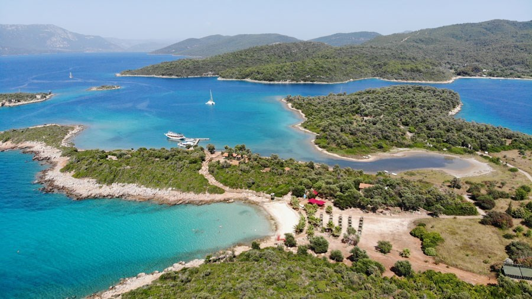
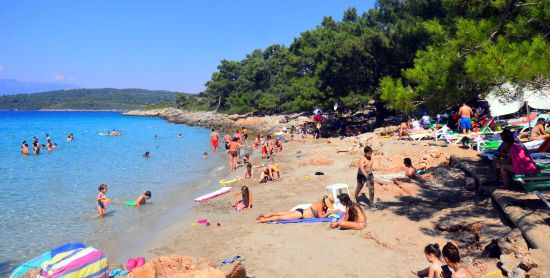
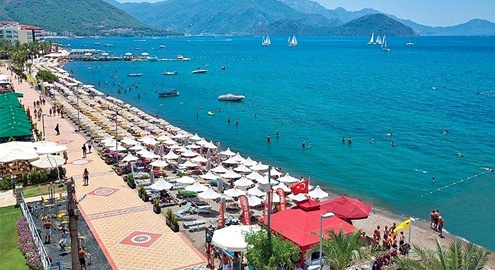
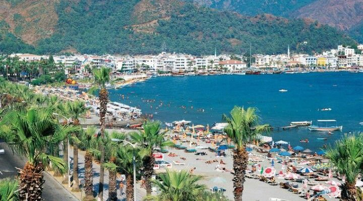

Marmaris,Muğla
Marmaris, Muğla'nın 13 ilçesinden birisidir.
MARMARİS GEZİLECEK YERLER
Sedir Adası

Marmaris ilçe merkezinin kuzey sahilinde konumlanan Kleopatra Plajı, ilçeye bağlı Çamlı mahallesi sınırları içerisinde yer almaktadır.
Yeşil ağaçların çevrelediği plaja ulaşımlar, ilçe merkezinden özel araçla Marmaris - Muğla yolunu kuzey yönüne devam ederek, tekne turlarıyla veya otogardan hareket eden Çamlı dolmuşlarıyla yapılabilmektedir.
İlçe merkezine ortalama 20 kilometre uzaklıkta bulunan plaj çevresinde ücretsiz kullanabileceğiniz otopark alanları yer almaktadır.
Marmaris’in popüler plajlarından olan Kleopatra Plajı, berrak denizi, altın rengine sahip kumları ve doğa ile iç içe olan konumu ile öne çıkmaktadır.
Maviyle yeşil arası bir renge sahip, oldukça sığ deniziyle birlikte uzun bir sahili olan plaj, bu yönüyle çocuklu aileler tarafından sık tercih edilmektedir.
Yaklaşık 5 metreye kadar sığ olan deniz, bu seviyeyi geçtikten sonra yavaş yavaş derinleşmektedir.
İncekum Plajı

Marmaris’e bağlı Çamlı mahallesinde yer alan İncekum Plajı, ilçe merkezine ortalama 20 kilometre uzaklıktadır.
Marmaris’in ünlü plajları arasında bulunan İncekum Plajı’na ulaşımlar ilçe merkezinden özel araçla Marmaris - Muğla yolundan Çamlı yönüne saparak, taksiyle veya otogardan hareket eden Çamlı minibüsleriyle yapılabilmektedir.
Plajın yakınlarında, araçlarınızı park edebileceğiniz otopark alanları bulunmaktadır.
Sedir Adası’na oldukça yakın bir konumda bulunan İncekum Plajı’nın sahili, ada kumlarıyla oldukça benzer özellikler taşımaktadır.
Altın rengine bürünmüş ince tanecikli kumların tüm sahili kapladığı plajın denizi hafif dalgalıdır.
Genel olarak sığ bir denize sahip olan plaj, bu yönüyle çocuklu aileler tarafından rahatlıkla tercih edilebilmektedir.
Uzunyalı Plajı

Marmaris ilçe merkezinde, Marmaris Kalesi’nin yaklaşık 600 metre batısında yer alan Uzunyalı Plajı, bölgenin en kalabalık plajları arasındadır.
İlçe merkezinden Uzunyalı Plajı’na ulaşımlar yürüyerek kolaylıkla yapılabilmektedir.
Uzun bir sahil şeridinde konumlanan plajın denizi Mavi Bayrak statüsüne sahiptir.
Bu nedenle oldukça temiz ve bakımlı bir plaj olan Uzunyalı’da, sahil boyunca sıralanan pek çok restoran ve kafe bulunmaktadır.
Plaj içerisinde su sporlarına yönelik birçok aktivite de gerçekleştirilebilmektedir.
Jet ski, muz, deniz paraşütü gibi eğlenceli aktiviteler yapabileceğiniz plajda arkadaşlarınız veya aileniz ile birlikte piknik de yapabileceğiniz alanlar bulunmaktadır.
İçmeler Plajı

Marmaris ilçe merkezine 8 kilometre uzaklıkta, şehrin güneybatısında konumlanan İçmeler Plajı, yeşilin maviye çaldığı bir renge sahip deniziyle birlikte genellikle yabancı turistler tarafından ilgiyle ziyaret edilmektedir.
Plaja ulaşımlar, ilçe merkezinden özel araçla Atatürk Caddesi’ni batı yönüne sahil boyunca devam ederek, taksiyle, İçmeler dolmuşlarıyla veya tekne turlarıyla yapılabilmektedir.
Marmaris’i ziyaret eden yabancı turistler tarafından daha sık tercih edilen İçmeler Plajı, sunduğu imkanlarla, temizliğiyle ve konumuyla birlikte bölgenin nezih plajları arasındadır.
Çevresinde büfe, restoran ve barların hizmet verdiği plajın kumu, ince tanecikli olup; altın rengine sahiptir.